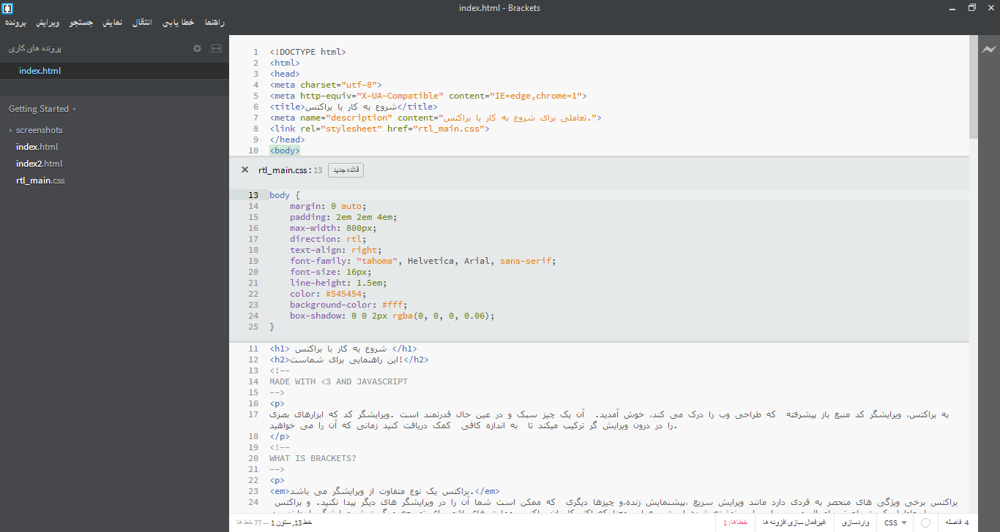

به براکتس، ویرایشگر کد منبع باز پیشرفته که طراحی وب را درک می کند، خوش آمدید. آن یک چیز سبک و در عین حال قدرتمند است .ویرایشگر کد که ابزارهای بصری را در درون ویرایش گر ترکیب میکند تا به اندازه کافی کمک دریافت کنید زمانی که آن را می خواهید.
براکتس یک نوع متفاوت از ویرایشگر می باشد. براکتس برخی ویژگی های منحصر به فردی دارد مانند ویرایش سریع ،پیشنمایش زنده،و چیزها دیگری که ممکن است شما آن را در ویرایشگر های دیگر پیدا نکنید. و براکتس با جاوا اسکریپت ،اچ تی ام ال و سی اس اس نوشته شده است. به این معنا که اکثر کاربران براکتس مهارت های لازم برای توسعه و گسترش ویرایشگر را دارند. در حقیقت ما هر روز از براکتس استفاده می کنیم تا براکتس را درست کنیم. برای یادگیری بیشتر درباره اینکه چطور از ویژه گی های کلیدی استفاده کنید بر روی آن مطالعه داشته باشید.
به منظور ویرایش کد با استفاده از براکتس،شما می توانید فقط پوشه ای که شامل فایلها یتان می باشد را باز کنید. براکتس با پوشه جاری باز شده به عنوان یک "پروژه" رفتار می کند; ویژه گی نکات کد،پیشنمایش زنده و ویرایش سریع فقط در پوشه جاری باز شده قابل استفاده است.
هنگامی که شما قصد خارج شدن از پروژه را دارید و کد را ویرایش می کنید، شما می توانید از منوی باز شوند در نوار کناری سمت چپ جهت تغییر پوشه ها استفاده کنید. اکنون،منوی باز شونده نشان می دهد "Getting Started" - پوشه ای است که فایلهای که اکنون در حال مشاهده آن هستید را شامل می شود. کلیک کنید بر روی منوی باز شونده و انتخاب کنید "باز کردن پوشه"را. برای باز کردن پوشه خودتان.شما می توانید همچنین بعداً استفاده کنید جهت برگشتن به پوشه های که قبلا باز کرده اید شامل همین پروژه نمونه نیز می شود.تعویض نه چندان زیاد بین اسناد و از دست دادن متن محتوا وقتی در حال ویرایش "اچ تی ام ال" هستید از کلید میانبر Cmd/Ctrl + E استفاده کنید تا یک ویرایشگر سطری سریع باز شود که تمام سی اس اس مربوطه را نشان دهد. یک کنترل برای سی اس اس تان بسازید و کلید ESC را فشار دهید تا به ویرایش اچ تی ام ال تان برگردید، یا فقط قواعد باز شده ی سی اس اس را ترک کنید در نتیجه آنها به بخشی از ویرایشگر اچ تی ام ال تان وارد خواهند شد. اگر شما کلید ESC کناری از یک ویرایشگر سطری سریع را فشار دهید آنها از بین می رود. ویرایش سریع همچنین قوانین تعریف شده در فایلهای LESS وSCSS که شامل قوانین تو در تو می باشند پیدا خواهد کرد.
Want to see it in action? Place your cursor on the tag above and press Cmd/Ctrl + E. You should see a CSS quick editor appear above, showing the CSS rule that applies to it. Quick Edit works in class and id attributes as well. You can use it with your LESS and SCSS files also. You can create new rules the same way. Click in one of the tags above and press Cmd/Ctrl + E. There are no rules for it right now, but you can click the New Rule button to add a new rule for . شما می توانید استفاده کنید از میانبر ثابتی تا چیزهای دیگری را، همچنین ویرایش کنید مثل توابع در جاوااسکریپت، رنگها و توابع زمانی انیمیشن و بیش از هر زمانی استفاده می کنید.
در حال حاضر ویرایشگر های سطری نمی توانند تودرتو باشند بنابراین شما می توانید تنها ویرایشگر سریع را استفاده کنید زمانی که مکان نما در یک ویرایش تمام صفحه است.
شما میدانید که ما فرآیند ذخیره /بازنگری را سالهاست انجام می دهیم در ویرایشتان جای را که تغیری ایجاد می کنید ذخیره می کنید و به مرورگر می روید و سپس نو سازی، سرانجام نتیجه را مشاهده کنید؟ با براکتس شما نیازی به آن کار ندارید.
براکتس یک ارتباط زنده با مرورگر محلی تان ایجاد می کند و یک نوع بروز رسانی اچ تی ام ال و سی اس اس را قرار می دهد در داخل آن. شما همچنین ممکن است چیزهای را که امروزه انجام می دهید با ابزار های مرورگرهای رایج، اما با براکتس شما نیازی به کپی و جایگزاری و در نهایت بازگشت به ویرایشگر کد ندارید. ویرایش کدهای تان اجرا خواهند شد در مرورگر ،اما به صورت زنده . براکتس یک ارتباط زنده با مرورگر محلی تان ایجاد می کند و یک نوع بروز رسانی اچ تی ام ال و سی اس اس را قرار می دهد در داخل آن. شما همچنین ممکن است چیزهای را که امروزه انجام می دهید با ابزار های مرورگرهای رایج، اما با براکتس شما نیازی به کپی و جایگزاری و در نهایت بازگشت به ویرایشگر کد ندارید. ویرایش کدهای تان اجرا خواهند شد در مرورگر ،اما به صورت زنده .
براکتس تغیرات ایجاد شده در اچ تی ام ال و سی اس اس و چگونگی تاثیر آن بر روی صفحه را به آسانی نشان می دهد. زمانی که نشانگر ماوس بر روی یک قانون سی اس اس قرار می گیرد براکتس تمام عناصر تحت تاثیر را مشخص می کند. مشابهاً زمانی که یک فایل html در حال ویرایش است براکتس عناصر مربوط به اچ تی ام ال را در مرورگر مشخص می کند. امروزه براکتس فقط از پیشنمایش زنده برای اچ تی ام ال و سی اس اس پشتیبانی می کند. اگر چه در نسخه جاری تغییرات در فایلهای جاوااسکریپت به طور خودکار، زمانی که شما ذخیره می کنید مجدّداً بار گذاری می شود. ما در حال کارکردن بر روی پیشنمایش زنده جهت پشتیبانی از جاوا اسکریپت هستیم. پیشنمایش زنده تنها با گوگل کروم ممکن هست، اما ما امیدواریم این قابلیت درآینده برای همه عمده مرورگرهای به کار گرفته شود.
If you have Google Chrome installed, you can try this out yourself. Click on the lightning bolt icon in the top right corner of your Brackets window or hit Cmd/Ctrl + Alt + P. When Live Preview is enabled on an HTML document, all linked CSS documents can be edited in real-time. The icon will change from gray to gold when Brackets establishes a connection to your browser. Now, place your cursor on the tag above. Notice the blue highlight that appears around the image in Chrome. Next, use Cmd/Ctrl + E to open up the defined CSS rules. Try changing the size of the border from 10px to 20px or change the background color from "transparent" to "hotpink". If you have Brackets and your browser running side-by-side, you will see your changes instantly reflected in your browser. Cool, right?
برای برخی از ما که هنوز رنگ معادل برچسب های HEX ,rgbرا حفظ نیستیم، براکتس آن را سریع و راحت ایجاد میکند تا ببینی که دقیقاً کدام رنگ است که استفاده می شود. در هر سی اس اس به سادگی نشانگر ماوس را روی هر مقدار رنگ یا گرادینت در براکتس ببریم، یک پیش نمایش از رنگ/ گرادینت به صورت خودکار نمایش داده خواهد شد. به صورت مشابه برای تصاویر هم بکار می رود. به سادگی زمانی که نشانگر بر روی /آدرس تصویر در ویرایشگر براکتس قرار گیرد به عنوان پیش نمایش تصویر بند انگشتی از عکس نشان خواهد داد.
To try out Quick View for yourself, place your cursor on the tag at the top of this document and press Cmd/Ctrl + E to open a CSS quick editor. Now simply hover over any of the color values within the CSS. You can also see it in action on gradients by opening a CSS quick editor on the tag and hovering over any of the background image values. To try out the image preview, place your cursor over the screenshot image included earlier in this document.علاوه بر تمام مزایای که در براکتس ایجاد شده است جامعه بزرگ و در حال رشد ما که متشکل از توسعه دهنده افزونه هاست هزاران افزونه برای اضافه شدن قابلیت های بسیار مفید ساخته شده است. اگر نیاز به موارد دیگری دارید که در براکتس ارائه نشده است به احتمال زیاد شخصی افزونه ای را برای آن ایجاد کرده است به فهرست و یا جستجو لیست افزونه های در دسترس رجوع کنید در پرونده ، مدیریت افزونه ها را انتخاب کنید و بر روی برگه در دسترس کلیک کنید. زمانی که افزونه ای را که می خواهید پیدا کردید کافیست بر روی "نصب" کلیک کنید و ادامه دهید.
براکتس یک پروژه منبع باز می باشد. توسعه دهندگان وب در سرتاسر جهان در حال مشارکت جهت ساخت یک ویرایشگر بهتر می باشند. بسیاری در حال ساخت افزونه های هستند که توانایی براکتس را افزایش می دهد. آنچه را که به آن فکر می کنید را به ما اطلاع دهید ،ایده های خود را به اشتراک بگزارید یا به صورت مستقیم در پروژه مشارکت کنید.